Mentors
The men and women behind the mentorship
Every mentor is known to the team, vetted, and supervised throughout camp. Real business leaders, doctors, engineers, and speakers who show up in person, this is who your son will learn alongside. Tap any mentor to read their full profile, or share it directly.

Banio Luiji Nobert
Founder and Team Leader, Potential Unexplored Ltd | Lead Facilitator
Banio Luiji Nobert is the vision bearer of the Boys to Men Mentorship Program, an initiative of Potential Unexplored Ltd, where he leads a team of staff working to catalyse the rise of leaders who can effectively...
Read full profile →
AL '">
Alionzi Lawrence Dangote
Mayor, Arua City 2026–2031 | 88th Guild President, Makerere University | Electrical Engineer
The youngest City Mayor in Uganda leading Arua City in West Nile, Lawrence's story is one of the most striking any boy at camp usually hears. Born and raised in West Nile, Dangote rose to become the 88th Guild...
Read full profile →
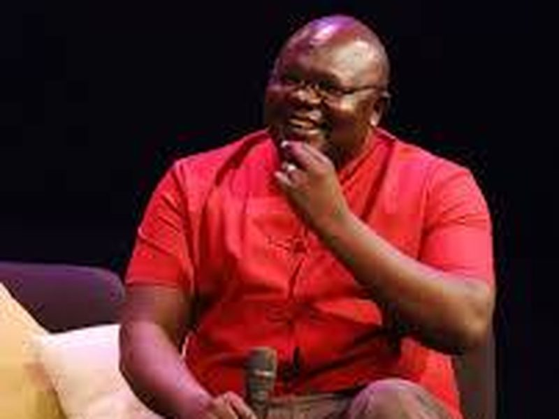
JJ '">
Dr. Joel Jaffer A'ita
CEO, Joadah Consult | Chairman, Muni University Council | Pan-African Infrastructure Strategist
Joel is a pan-African infrastructure strategist, consultant, and entrepreneur with a proven record of transforming national development visions into bankable, fundable, and buildable projects. He has led the...
Read full profile →
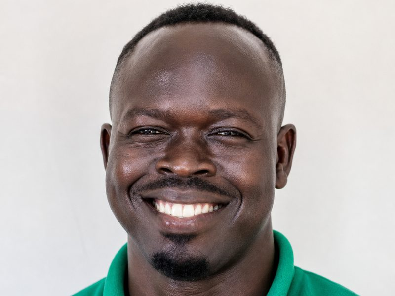
OR'">
Omia Razak Iganaci
Founder and CEO, Omia Agribusiness Development Group Ltd
An agribusiness leader passionate about transforming smallholder farming in Africa, Razak is the Founder and CEO of Omia Agribusiness Development Group Ltd, working to ensure last-mile access to climate-smart...
Read full profile →
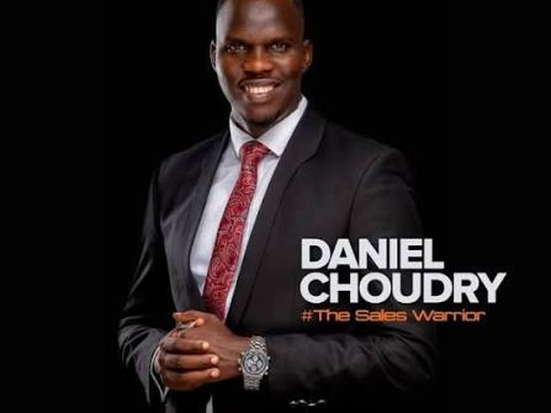
DC'">
Daniel Choudry
Founder and Lead Consultant, Daniel Choudry Sales Institute
Daniel is widely regarded as one of Africa's foremost sales training consultants, a reputation earned over more than a decade of work across ten countries on the continent and beyond. He has consulted for over ninety...
Read full profile →
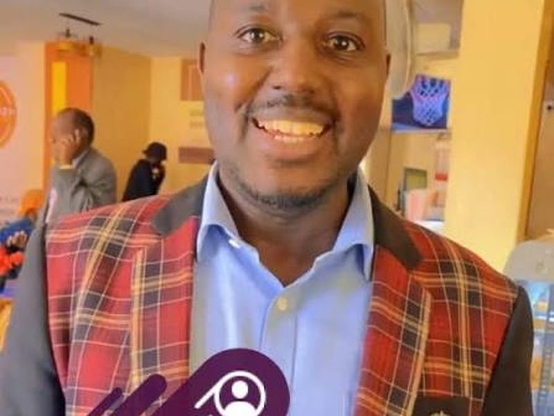
RB'">
Robert Bake
CEO, World of Inspiration Uganda | CEO, Win-Win Properties | CEO, Win-Win Microfinance | Entrepreneur | Investor | Author | Business Coach
Robert Bake is one of Uganda's most respected entrepreneurship trainers, business coaches, and investors, with more than fifteen years of practical experience building businesses, developing entrepreneurs, and...
Read full profile →
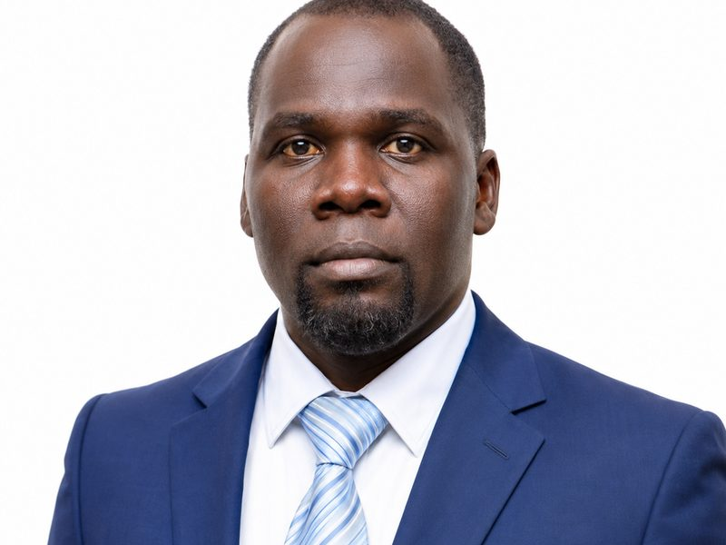
DD'">
Daniel Dratibi Drileba
Executive Director, Voice of Restoration International Limited | Mental Health Advocate | Author | Global Speaker
Daniel is one of Uganda's most recognised voices on mental health, an award-winning advocate who has appeared repeatedly on national television and radio to speak openly about trauma, addiction, and healing....
Read full profile →
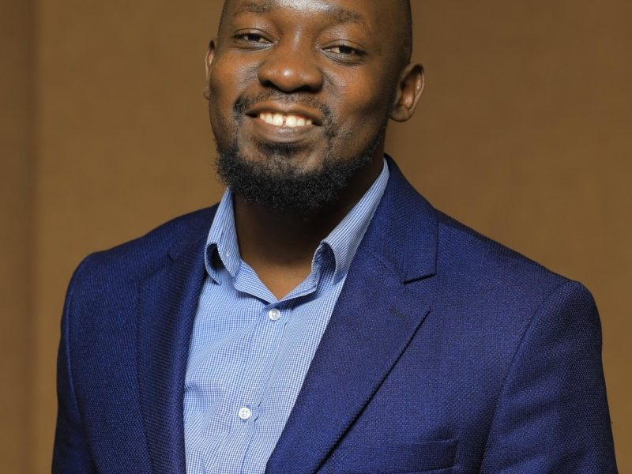
TM'">
Thomas Malunda
Senior Regional Manager, Farmer Support Services, Opportunity International | Founder, MT Agro Eco
Thomas is an agriculturalist by profession, passionate about creating a positive impact in the world through research, writing, speaking, and innovation. He carries vast experience working with Ag-tech start-ups,...
Read full profile →
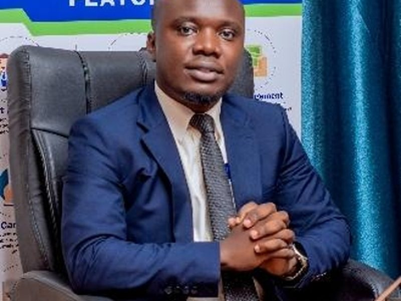
VM'">
Vincent Matsiko
Founder and Managing Director, Nugsoft Technologies
Vincent's career is a study in what consistency can build over time. He began in 2014 as head of the ICT department at Biguli SS, before moving through roles as a software developer at Waoni Technologies, a customer...
Read full profile →
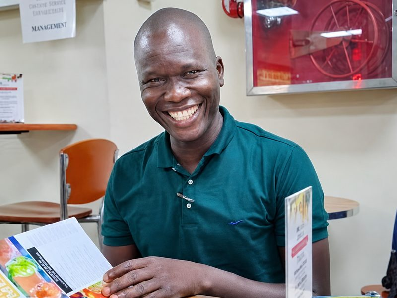
BA'">
Benard Alamiga Oku
Founder and Managing Director, Wonderland Farm Services SMC Limited
Benard leads Wonderland Farm Services, an agricultural enterprise whose operations have grown into a genuine beacon of innovation, expanding across West Nile and into the Democratic Republic of Congo. The company...
Read full profile →
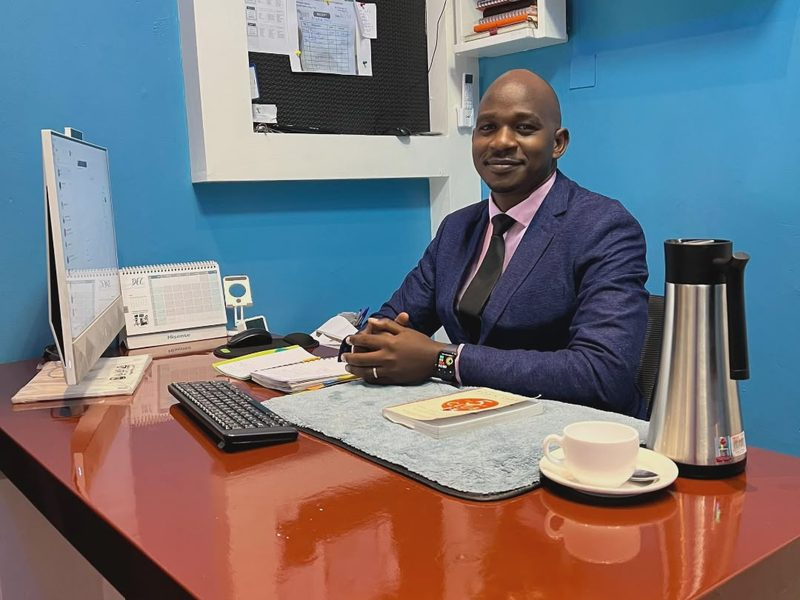
NO'">
Nathan Odeke
Founder, NASHO Computers
Nathan started the great NASHO Computers as an idea while still at university, with no family wealth, no major connections, and no guarantee it would work. Today it is a genuine multi-branch enterprise, importing and...
Read full profile →
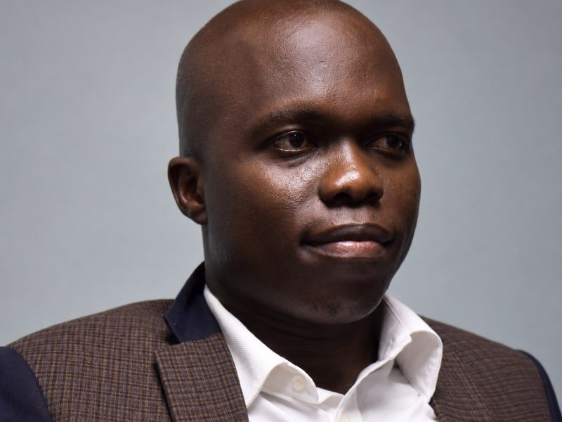
LO'">
Dr. Lawrence Okidi (PhD)
Co-founder and Director of Research, Capacity Beyond Ltd | Lecturer, Gulu University
Lawrence is a co-founder of Capacity Beyond Ltd, where he also serves as Director of Research. With over a decade of experience spanning academia and community work across East Africa, he brings a depth of research...
Read full profile →
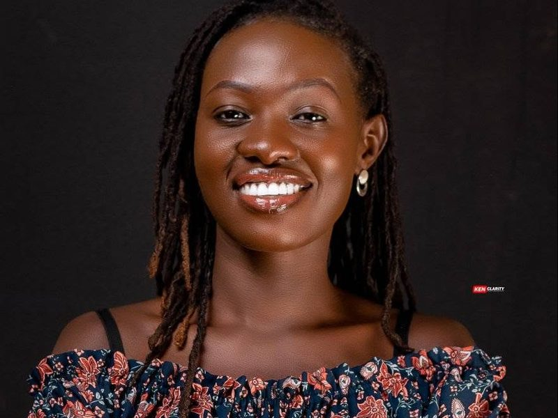
GW'">
Gala Winfred
Confidence Coach, Speaker, Author, and Social Development Practitioner
Gala Winfred is a confidence coach, speaker, author, and seasoned social development practitioner with over eight years of experience implementing humanitarian and development programmes, spanning child protection,...
Read full profile →
Every mentor agrees to clear conduct expectations before working with any boy. See our full
Safeguarding commitment.
Camp coordination is led by our core team. See our coordination Team. Interested in mentoring? See Support.
Apply Now to Join the Next Camp